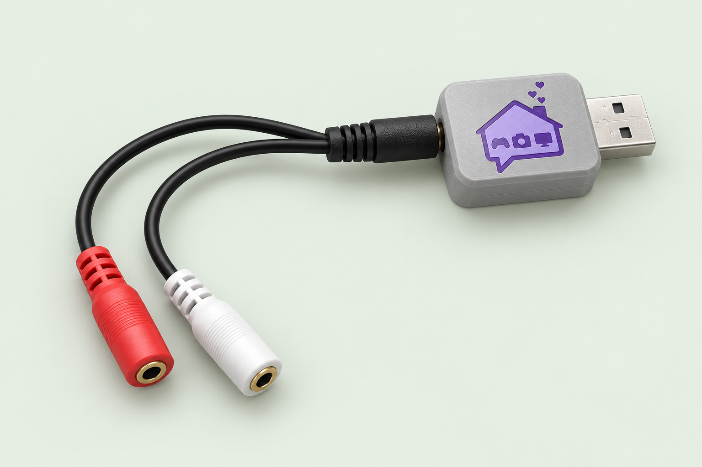

First visit with this Trinkey?
Older devices need a one-time setup before they can connect to this page.
 NARBE DEVICE TOOLSTRRS TRINKEY PREVIEW 0.2
NARBE DEVICE TOOLSTRRS TRINKEY PREVIEW 0.2Make your Trinkey work the way you want.
Choose a key or mouse button for each switch, save it, and you're ready.
Use desktop Chrome or Edge. Your settings stay on your device.

MAKE IT YOURS
Keep Auto for the splitter you already use. If Switch 2 does not respond in the test, choose its contact here and save again.
TRY IT OUT
Start a test, then press and release each physical switch. When both switches pass, we'll finish the test automatically.
During this test, switch presses won't type or click in other apps.
Older devices need a one-time setup before they can connect to this page.
Close other serial apps, try another USB port, and reconnect. Only one app can use the connection at a time.